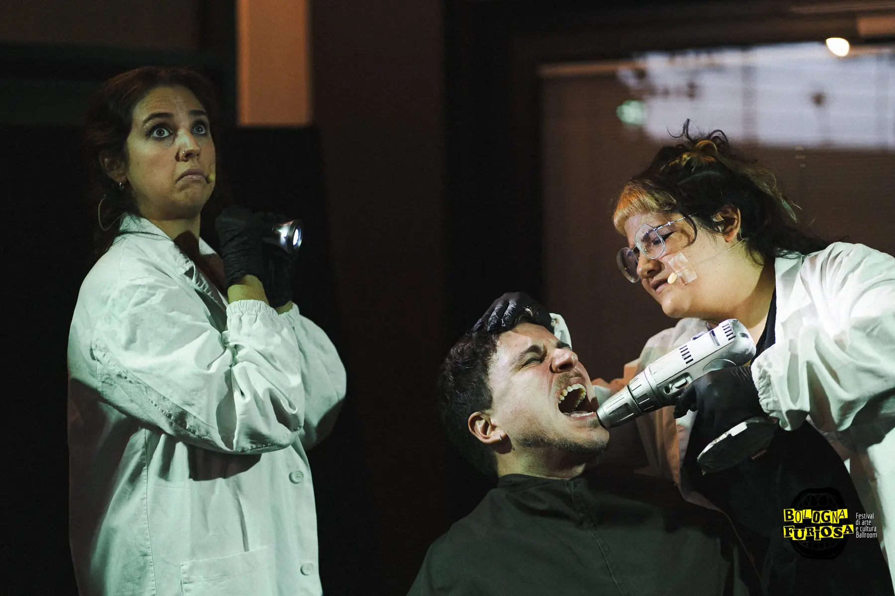
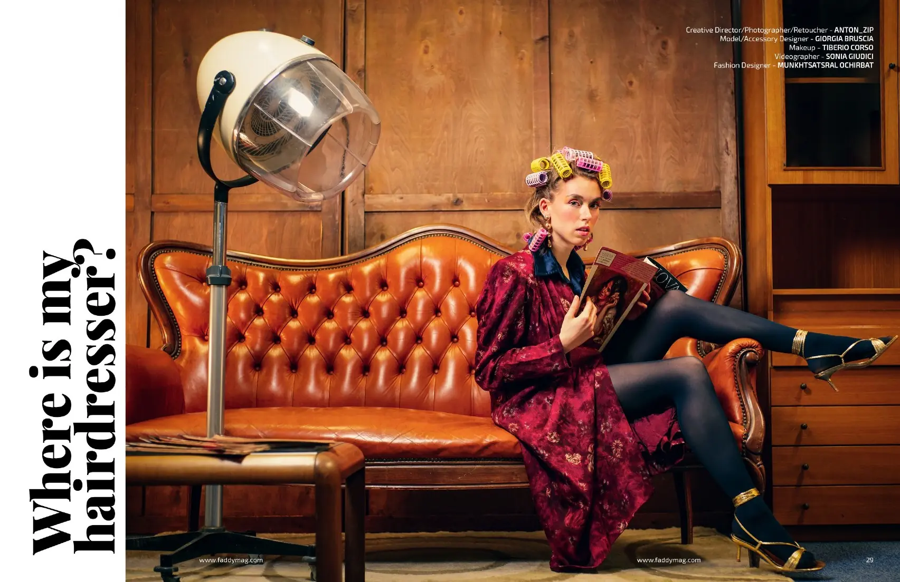
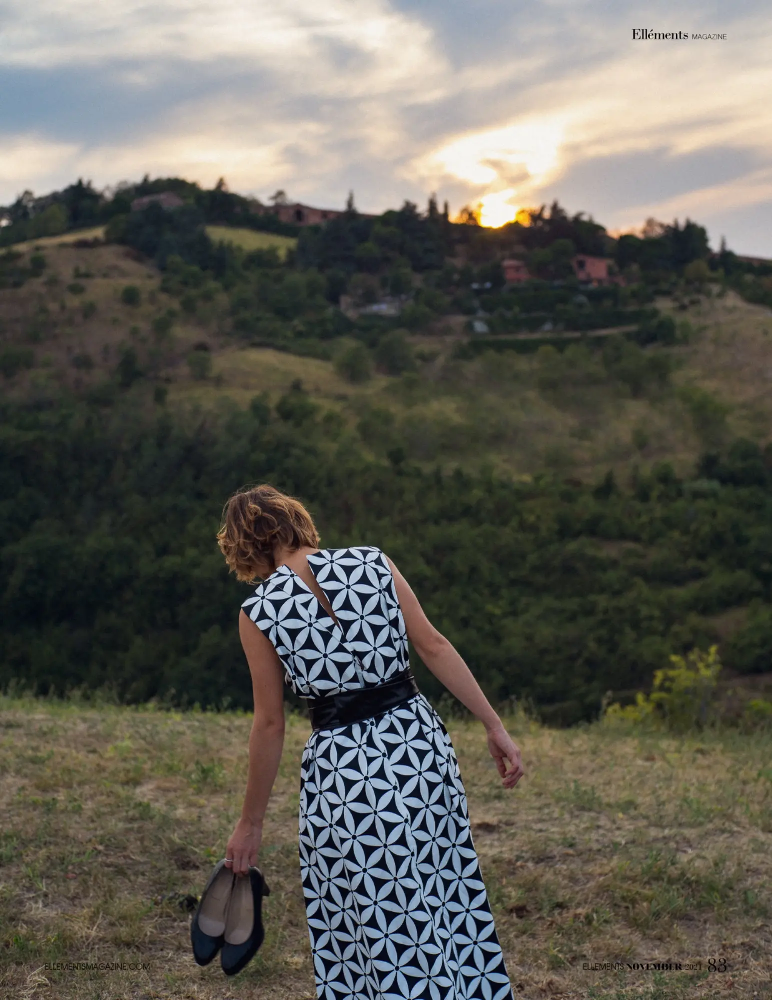
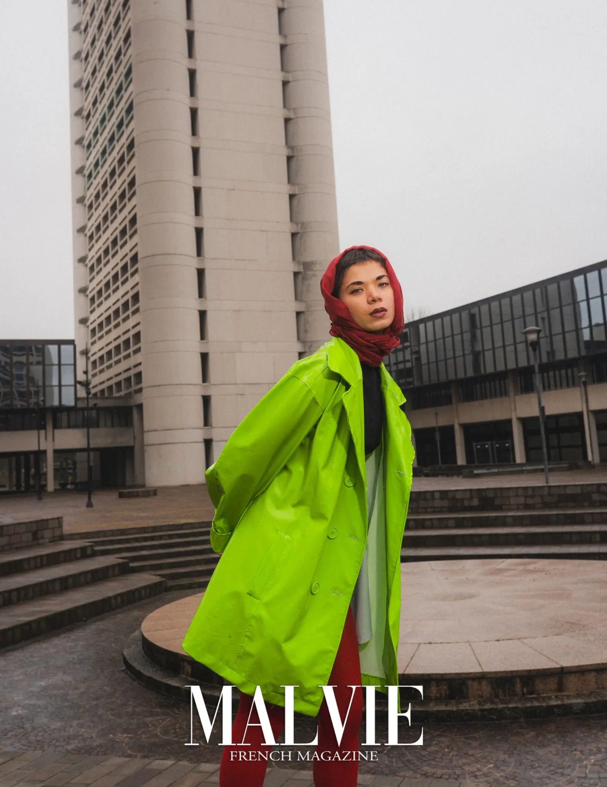

We make images. We build what makes them possible.
BluCineLab is a Bologna-based studio joining five complementary practices: visual direction, film and photography, creative production, fashion and styling, music and sound. The wider crew changes with the work. Responsibility stays close.
01 / Selected work
Images with real contexts.
Selected projects across culture, exhibition and hospitality. Each case is shown in context, with the people and roles that made it possible.

Festival / Community / Live culture
Bologna Furiosa
A multidisciplinary festival built around the Ballroom scene: ball, workshops, talks, performance, photography and short film. The image work belongs to a wider cultural project, not to a single author.
Studio people
Anton Likht · Sonia Giudici, within the founding team
Field
Festival development · communication · photo and film · event production
Exhibition / Performance / Beauty
Cosmoprof Visual activation
Image, body, landscape, light and sound meet inside a partner-led exhibition environment. BluCineLab’s contribution sits within a larger curatorial and technical system.
Contribution
Creative activation · living performance · visual production
A continuing content and communication system across Osteria Orsa, Fuoriporta, Jukebox, Locanda and the Pasta Fresca laboratory. Food is one subject among people, service, space, events, interviews and the rhythm of each venue.
Studio people
Anton Likht · Sonia Giudici
Contribution
Direction · editorial planning · photo and video production · social formats
Selected collaboration
Image work across disciplines
TECO — photography and art direction by Anton; styling and make-up by Beatrice.
VI. The Lovers — photography and direction by Anton; styling, make-up and hairstyle by Beatrice.
Two collaborations where photography, fashion and character were developed as one visual system.
02 / Selected image practice
The work begins with the eye.
A deliberately short selection from Anton Likht’s photographic work: editorial, fashion, landscape and character studies inside the wider BluCineLab practice.

Editorial studyDirection / photography

Elléments MagazineFashion / landscape

Malvie French MagazineFashion / architecture
Selected photography by Anton Likht. A wider body of portrait, fashion, landscape and documentary work is available through the external archive.
Tell us what you know: format, target dates, deliverables, usage, locations, travelling team and budget range. If part of it is still open, say that too.